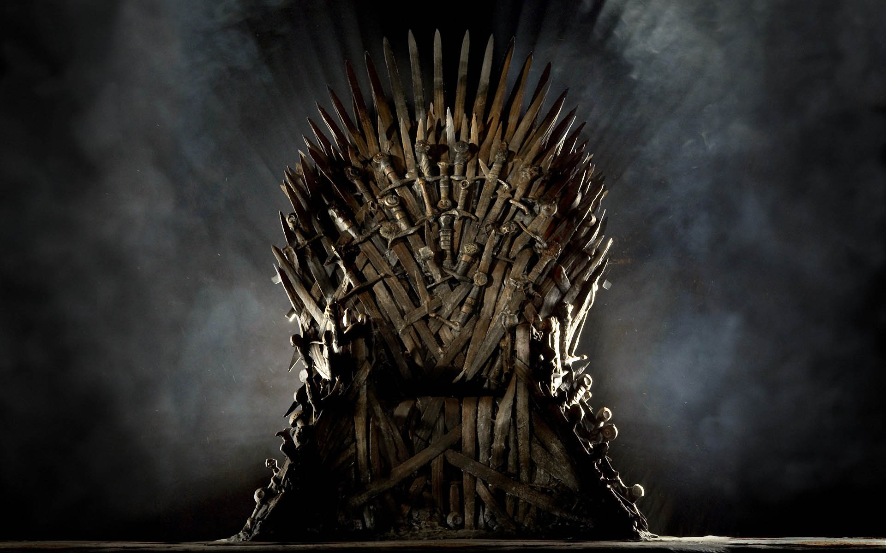
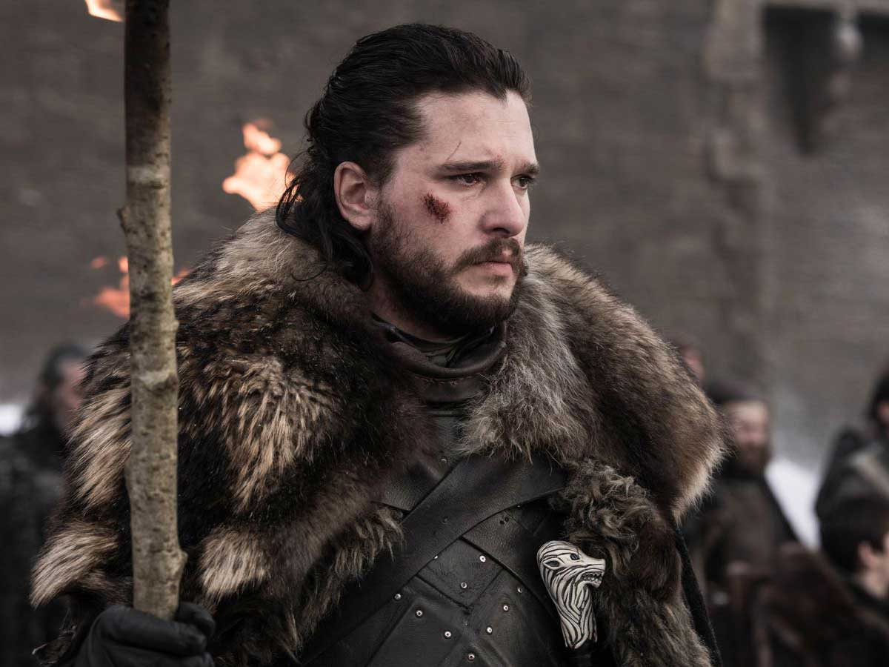
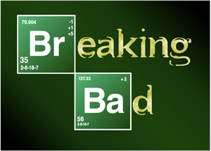
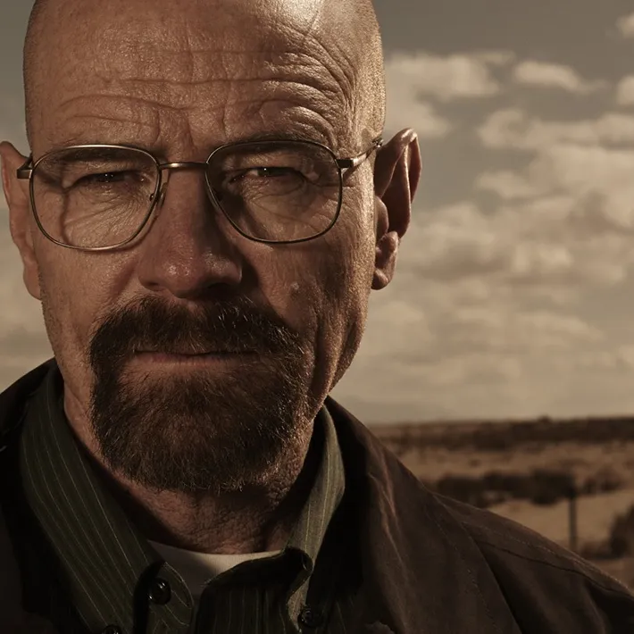
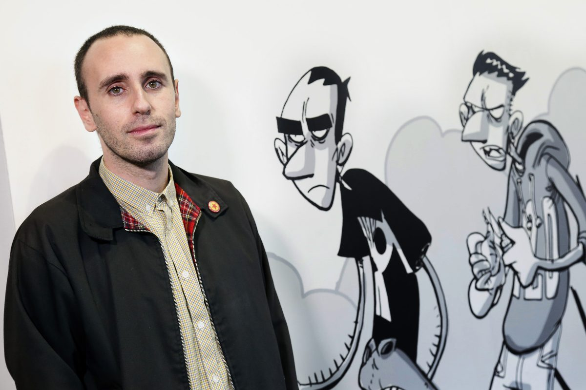
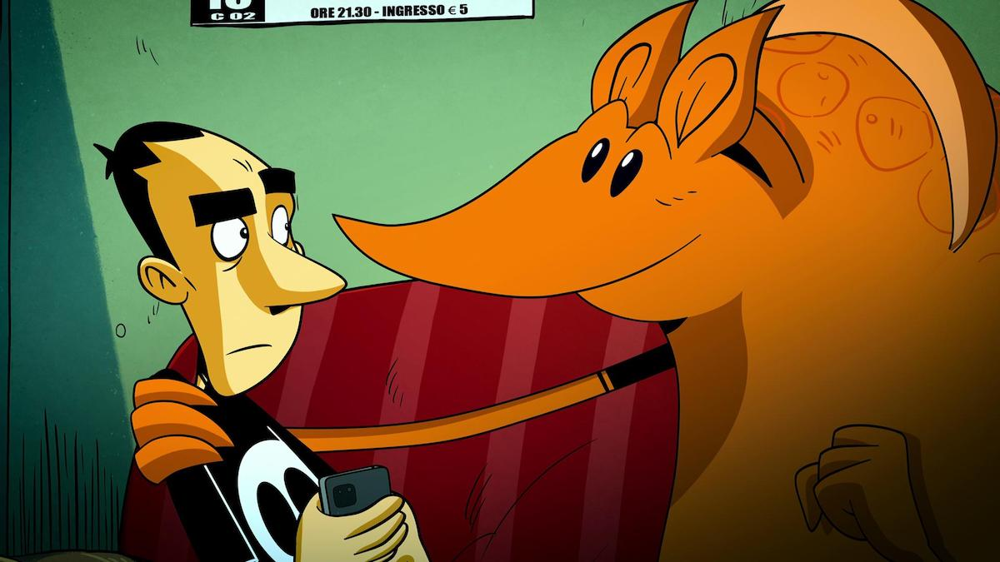
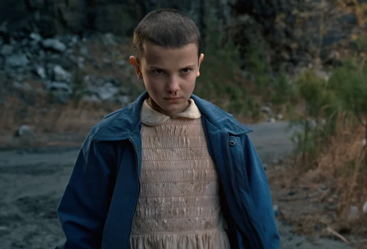
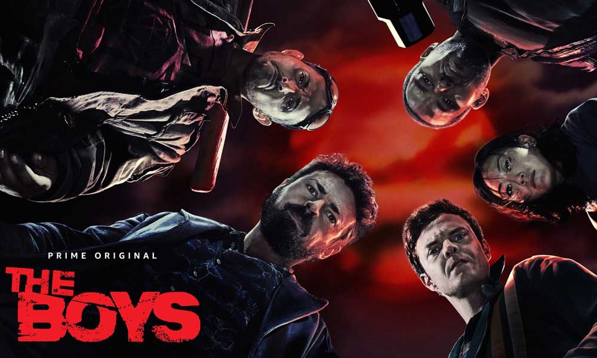
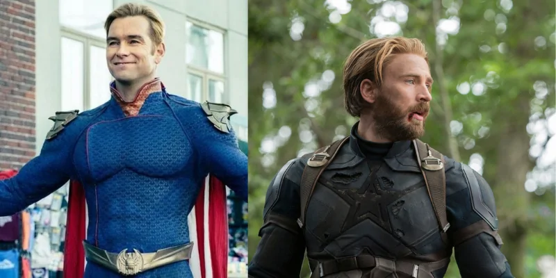

Game of Thrones
Breaking bad
Strappare Lungo i Bordi
Stranger Things
The Boys
La serie racconta le avventure di molti personaggi ed è ambientata in un grande mondo immaginario costituito principalmente dal continente Occidentale (Westeros) e da quello Orientale (Essos). Il centro più grande e civilizzato del continente Occidentale è la città capitale Approdo del Re, dove si trova il Trono di Spade dei Sette Regni. La lotta per la conquista del trono porta le più potenti e nobili famiglie del continente a scontrarsi o allearsi tra loro in un contorto gioco di potere, che coinvolge anche l'ultima discendente della dinastia regnante deposta. Gli intrighi politici, economici e religiosi dei nobili lasciano la popolazione nella povertà e nel degrado, mentre il mondo viene minacciato dall'arrivo di un inverno diverso dai precedenti, che risveglia creature leggendarie dimenticate e fa emergere forze oscure e magiche.

Celebre Trono di Spade da cui la serie prende il nome

Jhon Snow protagonista indiscusso della serie
Walter White è un professore di chimica di Albuquerque, New Mexico, che vive con la moglie Skyler, incinta della loro secondogenita, e il figlio Walter "Flynn" Junior, affetto da una paralisi cerebrale che gli causa problemi di linguaggio e lo costringe a camminare con l'aiuto di stampelle per muoversi. Alla soglia dei cinquant'anni scopre di avere un tumore e per far fronte alle difficoltà economiche della famiglia, Walter è costretto a svolgere un secondo lavoro come dipendente di un autolavaggio.Quando, il giorno dopo il suo cinquantesimo compleanno, a Walter viene diagnosticato un cancro ai polmoni, i suoi problemi sembrano precipitare, anche perché non dispone della necessaria copertura assicurativa per curarsi. Tuttavia, in seguito al casuale incontro con Jesse Pinkman, un suo ex studente diventato uno spacciatore di poco conto, Walter decide di cominciare a cucinare insieme a lui cristalli di metanfetamina. Grazie alla sua conoscenza della chimica, il prodotto di Walter si rivela di qualità nettamente superiore rispetto alla concorrenza, con una purezza del 99,1%. Decide quindi di sfruttare le sue capacità per farsi, a mano a mano, sempre più strada nel mercato della droga e ricavare una quantità di denaro tale da lasciare al sicuro la sua famiglia nel momento in cui la malattia avrebbe preso il sopravvento.

Logo della serie apparso nell'opening

Walter White personaggio principale della serie
Strappare lungo i bordi è una serie animata italiana creata, scritta e diretta per Netflix dall'affermato fumettista italiano Zerocalcare. Ambientata nel suo noto e amato universo narrativo, la comedy è un racconto costellato di flashback e aneddoti che spaziano dall'infanzia ai giorni nostri in cui Zerocalcare percorre un viaggio in treno con Sarah e Secco, gli amici di sempre, verso qualcosa di molto difficile da fare. Tutto, dai ricordi sugli anni della scuola alle lamentazioni esistenziali nei confronti della propria incompiutezza, è narrato con la voce di Zerocalcare, che doppia tutti i personaggi tranne l'armadillo, interpretato da Valerio Mastandrea (La prima cosa bella). È con questo stratagemma che ogni capitolo della storia sembra costruire un tassello di un mondo fatto di pochissime certezze e di amicizie incrollabili. E quando nel finale tutti i pezzi saranno al loro posto, il mosaico che avranno costruito sarà una sorpresa per lo spettatore, ma anche per il protagonista.

Zerocalcare: fumettista e ideatore della serie

Protagonista e la sua coscienza
Ambientata nel 1983 nella fittizia città di Hawkins, nell'Indiana, e in parte nel mondo del "Sottosopra", la serie, è incentrata sulla misteriosa sparizione di un bambino di nome Will e sulla comparsa di Undici, una bambina dai capelli rasati dotata dallo strano potere di poter spostare oggetti con la mente, fuggita da un laboratorio segreto, l'Hawkins National Laboratory. Quasi tutti gli eventi che accadono nel corso della vicenda sono strettamente connessi al Sottosopra, un'oscura "dimensione parallela" al nostro mondo, popolata da creature mostruose.

Undici: uno dei personaggi principali della serie
Logo della serie
The Boys è un anti-superhero drama, basato sull'omonimo fumetto di Garth Ennis e Darick Robertson, prodotto da Seth Rogen ed Evan Goldberg per Prime Video di Amazon. L'irriverente serie, creata da Eric Kripke (Supernatural), segue l'idea secondo la quale i supereroi non possano essere tutti buoni e di nobili intenzioni. Cosa succederebbe, dunque, se usassero i propri poteri e il proprio status per corrompere le autorità, scendere a patti con aziende di poco rispetto o perpetrare abusi di ogni tipo? Servirebbe qualcuno per tenerli a bada. Ed è qui che entrano in gioco i Boys, un gruppo di guardiani riunitisi per contrastare i Seven, i sette supereroi pagati dall'agenzia multimiliardaria Vought International. Dietro i sorrisi smaglianti e la loro straordinaria forza si celano infatti azioni tutt'altro che nobili, e farle venire alla luce sarà un'impresa davvero eroica.

Poster della serie

Patriota (The Boys) vs Captain America (Avengers) Antieroe ed Eroe